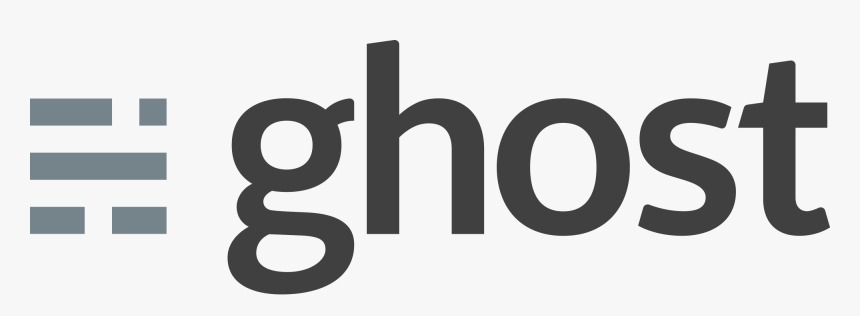

Ghost is a free and open source blogging platform written in JavaScript and distributed under the MIT License, designed to simplify the process of online publishing for individual bloggers as well as online publications.
The concept of the Ghost platform was first floated publicly in November 2012 in a blog post by project founder John O'Nolan, which generated enough response to justify coding a prototype version with collaborator Hannah Wolfe.
The first public version of Ghost, released October 2013, was financed by a successful Kickstarter campaign which achieved its initial funding goal of £25,000 in 11 hours and went on to raise a final total of £196,362 during the 29-day campaign.
Know More About Ghost
Know More About Ghost